МЕХАНИЧЕСКАЯ ТРАНСМИССИЯ В СБОРЕ (для моделей с 1KD-FTV) > СНЯТИЕ |
| 1. ОТСОЕДИНИТЕ ПРОВОД ОТ ОТРИЦАТЕЛЬНОГО ВЫВОДА АККУМУЛЯТОРНОЙ БАТАРЕИ |
| 2. СНИМИТЕ РУКОЯТКУ РЫЧАГА ПЕРЕКЛЮЧЕНИЯ ПЕРЕДАЧ В СБОРЕ |
Снимите рукоятку с рычага переключения передач.
| 3. СНИМИТЕ ОБЛИЦОВКУ ПАНЕЛИ ПОЛА В СБОРЕ |
| 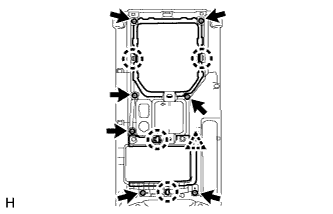 |
Выверните 7 винтов.
Освободите 4 захвата и фиксатор и снимите верхнюю облицовку панели пола.
| 4. СНИМИТЕ ЧЕХОЛ РЫЧАГА ПЕРЕКЛЮЧЕНИЯ ПЕРЕДАЧ В СБОРЕ |
| 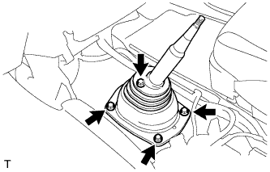 |
Выверните 4 винта и снимите чехол рычага переключения передач.
| 5. СНИМИТЕ НАПОЛЬНЫЙ РЫЧАГ ПЕРЕКЛЮЧЕНИЯ ПЕРЕДАЧ В СБОРЕ |
| 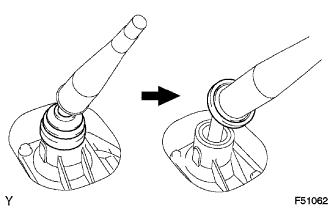 |
Открепите чехол крышки рычага переключения передач от механической трансмиссии.
| 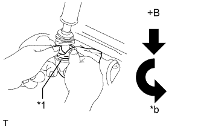 |
Закройте крышку рычага переключения передач тканью.
| *1 | Ткань |
| *a | Вниз |
| *b | Против часовой стрелки |
Надавливая на крышку рычага переключения передач, поверните ее против часовой стрелки, чтобы снять рычаг переключения передач.
Вытяните и снимите рычаг переключения передач.
| 6. СЛЕЙТЕ МАСЛО МЕХАНИЧЕСКОЙ ТРАНСМИССИИ |
Снимите пробку сливного отверстия и прокладку, а затем слейте масло механической трансмиссии.
Установите новую прокладку и пробку сливного отверстия.
| 7. СНИМИТЕ ПРИЕМНУЮ ТРУБУ В СБОРЕ |
| 8. СНИМИТЕ НИЖНИЙ ЗАЩИТНЫЙ КОЖУХ КАРТЕРА РАЗДАТОЧНОЙ КОРОБКИ |
Выверните 4 болтов и снимите нижний защитный кожух картера раздаточной коробки.
| 9. СНИМИТЕ ПЕРЕДНИЙ КАРДАННЫЙ ВАЛ В СБОРЕ |
| 10. СНИМИТЕ КАРДАННЫЙ ВАЛ В СБОРЕ |
| 11. СНИМИТЕ СТАРТЕР В СБОРЕ |
| 12. ОТСОЕДИНИТЕ РАБОЧИЙ ЦИЛИНДР СЦЕПЛЕНИЯ В СБОРЕ |
| 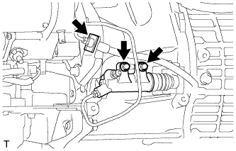 |
Выверните 2 болта, освободите фиксатор, а затем отсоедините рабочий цилиндр.
| 13. СНИМИТЕ ЛЕВЫЙ КРОНШТЕЙН ЭЛЕМЕНТА ПЕРЕДНЕЙ ПОДВЕСКИ |
| 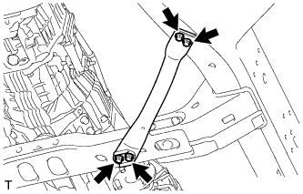 |
Выверните 4 болта и снимите левый кронштейн элемента передней подвески.
| 14. СНИМИТЕ ПРАВЫЙ КРОНШТЕЙН ЭЛЕМЕНТА ПЕРЕДНЕЙ ПОДВЕСКИ |
| 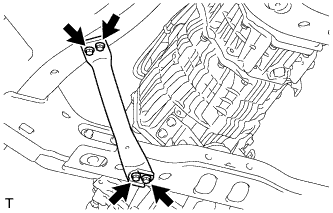 |
Выверните 4 болта и снимите правый кронштейн элемента передней подвески.
| 15. СНИМИТЕ ПОПЕРЕЧИНУ РАМЫ № 3 В СБОРЕ |
Подоприте заднюю часть трансмиссии с помощью опорной стойки.
| 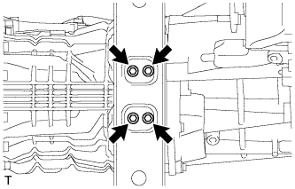 |
Выверните 4 болта из поперечины рамы № 3 в сборе.
| 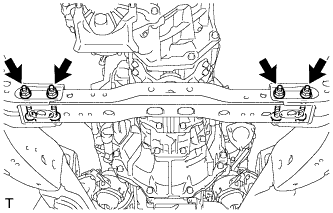 |
Отверните 4 гайки и снимите 4 болта и поперечину рамы № 3 в сборе.
| 16. СНИМИТЕ ЗАДНЮЮ ПОДУШКУ ОПОРЫ ДВИГАТЕЛЯ № 1 |
| 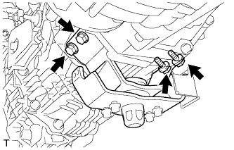 |
Выверните 4 болта и снимите заднюю подушку опоры двигателя с механической трансмиссии.
| 17. ОТСОЕДИНИТЕ ЖГУТ ПРОВОДОВ |
для моделей без DPF:
| 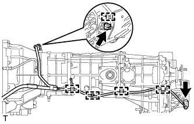 |
Отсоедините 5 зажимов жгута проводов.
Отсоедините 2 разъема и жгут проводов.
для моделей с DPF:
Отсоедините 3 разъема и 3 зажима разъемов.
Освободите 8 зажимов жгута проводов.
| 18. ОТСОЕДИНИТЕ ШЛАНГ САПУНА МЕХАНИЧЕСКОЙ ТРАНСМИССИИ И РАЗДАТОЧНОЙ КОРОБКИ В СБОРЕ |
для моделей без DPF:
| 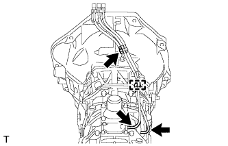 |
Открепите зажим шланга сапуна.
Отсоедините 3 шланга сапуна.
для моделей с DPF:
| 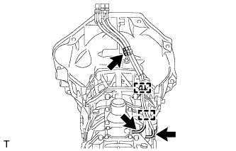 |
Отсоедините 2 зажима шланга сапуна.
Отсоедините 3 шланга сапуна.
| 19. СНИМИТЕ МЕХАНИЧЕСКУЮ ТРАНСМИССИЮ С РАЗДАТОЧНОЙ КОРОБКОЙ |
| 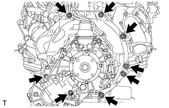 |
Выверните 8 болтов.
Снимите механическую трансмиссию с раздаточной коробкой.
| 20. СНИМИТЕ ВЕРХНЮЮ КРЫШКУ ТРАНСМИССИИ В СБОРЕ |
 |
Выверните 2 болта и снимите верхнюю крышку.
| 21. СНИМИТЕ ДИФФЕРЕНЦИАЛЬНЫЙ ДАТЧИК ДАВЛЕНИЯ В СБОРЕ (для моделей с DPF) |
| 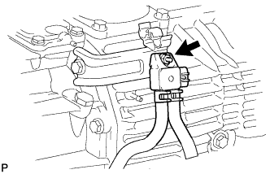 |
Отверните гайку и снимите дифференциальный датчик давления с кронштейна датчика.
| 22. СНИМИТЕ РАЗДАТОЧНУЮ КОРОБКУ В СБОРЕ |
 |
Для моделей с 1KD-FTV:
| *A | Для моделей с 1KD-FTV, RA61F |
| *B | Для моделей с 1KD-FTV, A750F |
 |
Кроме моделей с 1KD-FTV:
Выверните 8 болтов и снимите кронштейн.
Отсоедините раздаточную коробку от трансмиссии.